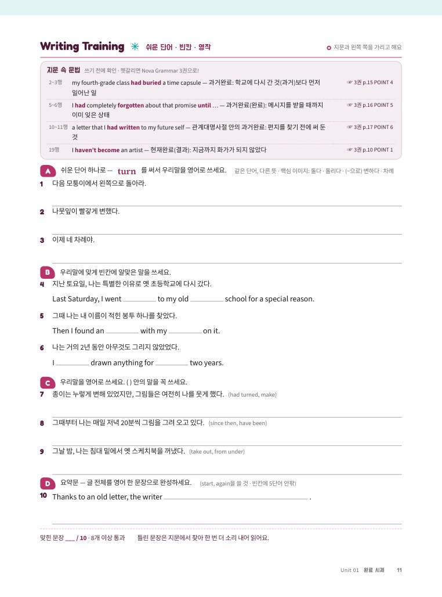
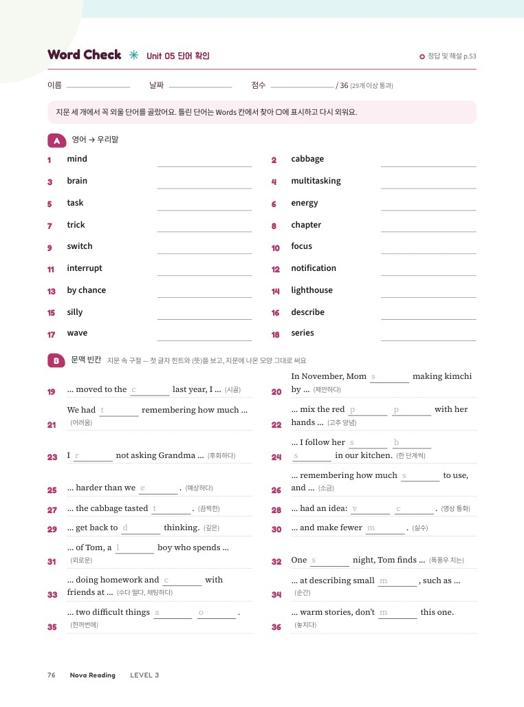
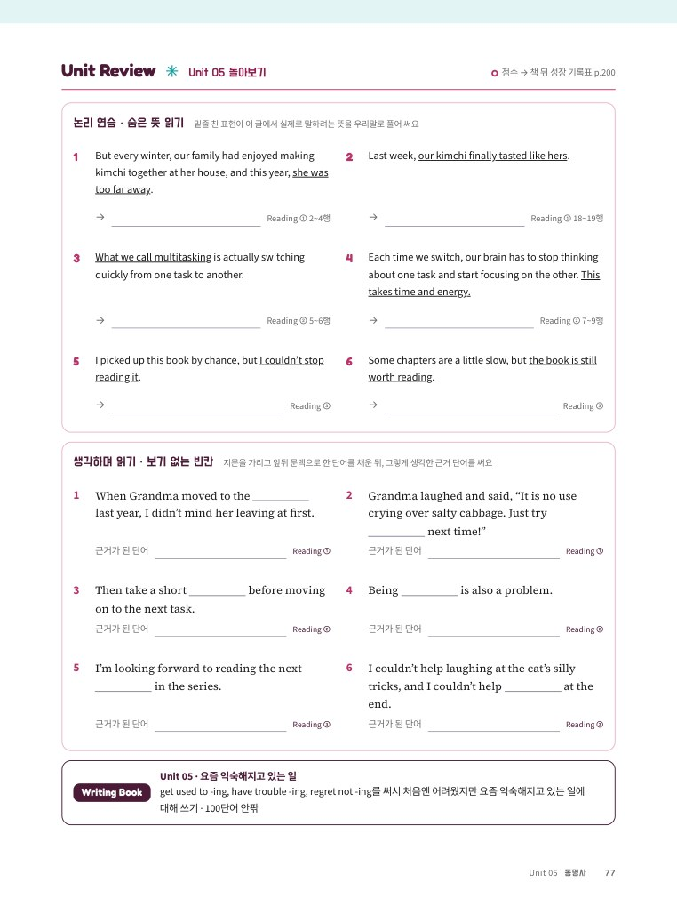
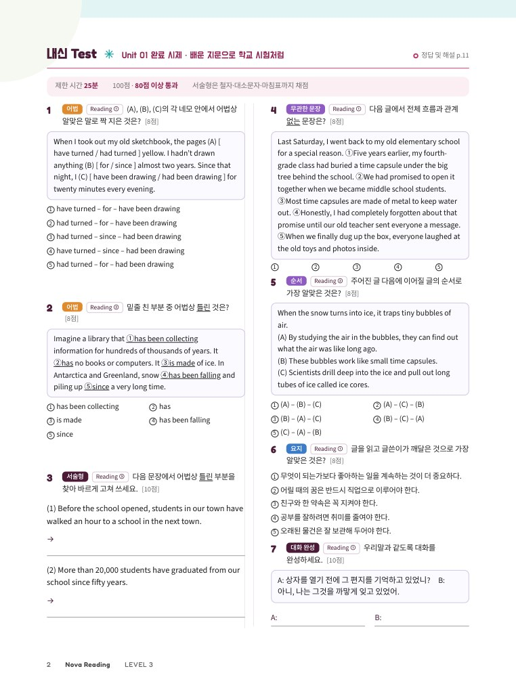
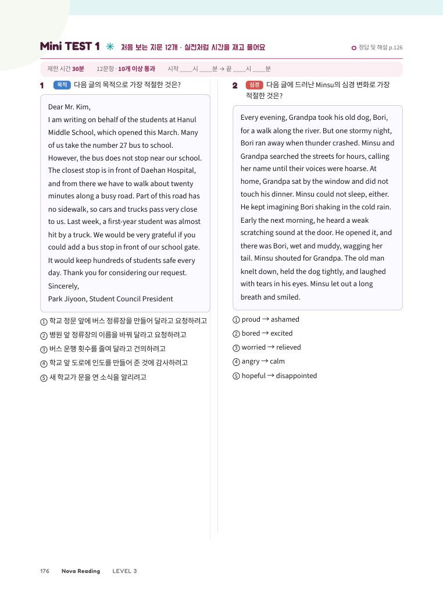
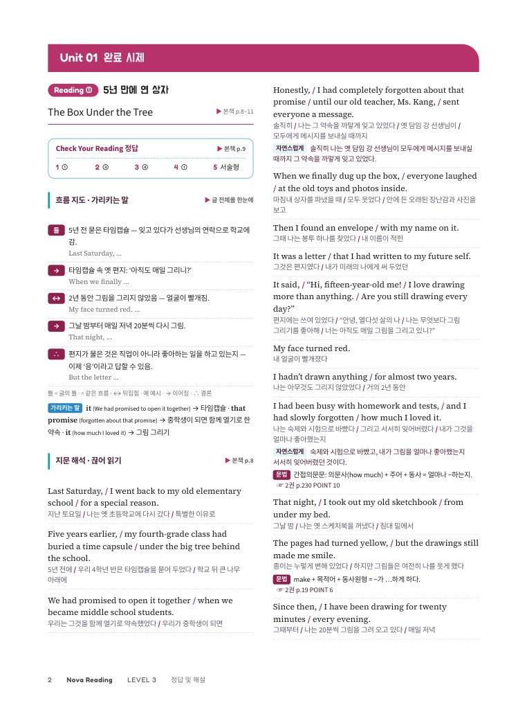

Nova Reading
긴 글도 앞에서부터, 문단마다 한마디로

차례
Contents구성과 특징
How to Use This Book한 Unit은 지문 세 개와 Word Check · Unit Review로 이루어져요. 지문 하나는 지문 → 문제 → Focus Reading → 영작 네 쪽이에요. 이 책의 중심은 Chunk Reading(직독직해) — 의미 덩어리로 끊어, 뒤로 돌아가지 않고 앞에서부터 바로 뜻을 잇는 읽기예요.








 노바 쌤
노바 쌤혼자서도 끝까지! Nova Reading 공부법
지문 하나(네 쪽)를 하루에 공부하면 알맞아요. 순서대로 하고 통과 기준을 넘으면 다음으로 가요.
- ⓪ 단어 먼저 — 맞은편 Words와 클래스카드로 지문 단어를 먼저 외워요.
- ① 처음 읽기 — Think!와 알고 읽기를 본 뒤, 시간을 재며 끝까지 읽어요. 모르는 말이 있어도 멈추지 말고, 뒤로 돌아가지 말고!
- Check Your Reading — 5문항을 풀고 해설로 채점해요. 4개 이상이면 통과.
- Focus Reading — 6문장을 막히는 곳만 / 로 끊어 앞에서부터 해석. ★ 문장은 구조 표시 → Hint 확인, 그리고 문단마다 한마디로 · 글 전체 한마디로. 표시 방법은 p.6~7.
- ② 음원 따라 읽기 → ③ 다시 읽기 — QR 음원을 따라 소리 내어 읽고(듣기 페이지에서 속도 조절), 음원보다 빨리 다시 읽으며 시간을 재요. ①보다 빨라졌나요?
- Writing Training — 지문과 왼쪽 쪽을 가리고 쉬운 단어 · 빈칸 · 영작 · 요약문. 10개 중 8개 이상이면 통과.
- 해설로 확인 — Focus Reading 표시 정답 · 문단 한마디로 모범 답과 끊어 읽기 해석 · 흐름 지도를 보고, 틀린 문장은 해설 표시를 보며 다시 앞에서부터 읽어요.
- Word Check — 80% 이상 통과. 틀린 단어는 Words 칸에 표시하고 다시 외워요.
- Unit Review — 논리 연습과 보기 없는 빈칸을 풀고, Writing Book 주제로 글을 써요.
- 워크북 — 내신 Test(80점 이상)와 본문 완성. 그리고 성장 기록표(p.200)에 점수를 적어요.
다시 ① 틀린 문제를 해설 보기 전에 한 번 더 → ② 지문의 근거 문장을 찾아 표시 → ③ 해설 읽기 → ④ 음원과 함께 지문을 한 번 더 읽기
Unit 12까지 마치면 Mini TEST 1 · 2(p.176~)를 고1 3월 모의고사처럼 30분씩 풀어요. 틀린 유형은 그 유형이 나온 Unit의 지문으로 돌아가 복습해요.
진도표
My Plan한 칸을 마칠 때마다 □에 ✓. 지문 하나를 하루에 하면 한 Unit은 1주 안팎이에요. 점수는 성장 기록표(p.200)에 적어요.
| 지문 ① | 지문 ② | 지문 ③ | Word Check | Unit Review | 워크북 | 시작한 날 | 마친 날 | |
|---|---|---|---|---|---|---|---|---|
| Unit 01완료 시제 | □ | □ | □ | □ | □ | □ | / | / |
| Unit 02조동사 | □ | □ | □ | □ | □ | □ | / | / |
| Unit 03수동태 | □ | □ | □ | □ | □ | □ | / | / |
| Unit 04부정사 | □ | □ | □ | □ | □ | □ | / | / |
| Unit 05동명사 | □ | □ | □ | □ | □ | □ | / | / |
| Unit 06분사 | □ | □ | □ | □ | □ | □ | / | / |
| Unit 07비교 | □ | □ | □ | □ | □ | □ | / | / |
| Unit 08접속사 | □ | □ | □ | □ | □ | □ | / | / |
| Unit 09관계사 | □ | □ | □ | □ | □ | □ | / | / |
| Unit 10가정법 | □ | □ | □ | □ | □ | □ | / | / |
| Unit 11일치와 화법 | □ | □ | □ | □ | □ | □ | / | / |
| Unit 12특수 구문 | □ | □ | □ | □ | □ | □ | / | / |
| Mini TEST 1 | 맞힌 개수 ____ / 12 | / | / | |||||
| Mini TEST 2 | 맞힌 개수 ____ / 12 | / | / | |||||
How to Mark
✳문장 표시 방법뼈대(동사)를 찾고 꾸미는 말을 묶으면 긴 문장도 한눈에. Reading 3에서는 분사구문 ○가 새로 나오고, [ ]는 명사절에만 써요. 화살표는 꾸밈 관계만 — 읽는 순서는 언제나 왼쪽 → 오른쪽.
| 기호 | 이름 · 하는 일 | 예문 · 해석(끊은 순서대로) | |
|---|---|---|---|
| 뼈대문장의 기둥 | 동사문장의 중심. 문장(절)마다 하나 — 괄호 안의 동사도 표시해요. | Mina has read the book twice.미나는 / 그 책을 두 번 읽었다 | |
| 접속사 · 관계사절과 절을 이어요. 관계사(who · where · whoever 등)도 △. | It rained, so we stayed home.비가 왔다 / 그래서 우리는 집에 있었다 | ||
| 꾸미는 말덧붙는 설명 | ( ) | 형용사구 · 절명사를 꾸며요. 화살표 끝 = 꾸밈 받는 명사. 관계사절도 ( ). | This is the town (where I grew up).이곳이 그 마을이다 / 내가 자란 |
| < > | 부사구 · 절때 · 이유 · 조건 · 양보 등을 더해요. | <Even though it was late>, she kept working.늦었지만 / 그녀는 계속 일했다 | |
| 분사구문-ing · p.p.로 시작하는 덩어리를 ○. ‘~하면서 · ~해서’로 이어 읽어요. | Walking home, I saw an old friend.집으로 걸어가다가 / 나는 옛 친구를 보았다 | ||
| 명사 자리명사 역할 절 | [ ] | 명사절절이 통째로 명사 자리에. 명사구(to부정사 · 동명사)는 표시하지 않아요. | I wonder [whether he will come].나는 궁금하다 / 그가 올지 |
이렇게 표시해요
How to Mark
✳표시하며 읽기 5단계동사 찾기 동사에 □. 동사가 3개 → 문장(절)이 3개예요. 분사구문의 Looking은 □ 하지 않아요.
Looking at the dark sky, Mina said that it would rain soon because the wind was cold.
잇는 말 찾기 절과 절을 잇는 접속사 · 관계사에 △. 동사 3개 = △ 2개.
Looking at the dark sky, Mina said that it would rain soon because the wind was cold.
꾸미는 말 묶기 때 · 이유 · 조건이면 < >, 분사구문은 ○, 명사를 꾸미면 ( ) + 화살표.
Looking at the dark sky, Mina said that it would rain soon <because the wind was cold>.
명사절 묶기 · 진짜 동사 확인 절이 명사 자리에 오면 [ ] → 괄호 밖에 남은 □ said가 진짜 동사.
Looking at the dark sky, Mina said [that it would rain soon] <because the wind was cold>.
막히는 곳만 끊어서 앞에서부터 읽기 덩어리마다 / 긋고, 나온 순서대로 바로 뜻을 붙여요. 끊는 자리와 개수는 사람마다 달라도 돼요 — 순서대로 뜻이 이어지면 정답, 덩어리 안(a cup / of water)만 가르지 않아요.
that절은 [ ]일까, ( )일까? — 그리고 분사구문 ○
that 뒤가 빠진 것 없는 완전한 문장이면 접속사 that → [ ], 주어나 목적어가 빠져 있으면 관계대명사 that → ( )(빈자리 찾기 ☞ 3권 p.157). 분사구문은 ‘~해서 · ~하면서 · ~할 때’로 앞에서부터 이어 읽어요.
Focus Reading은 이렇게 해요
| ① Chunk Reading | 6문장을 막히는 곳만 / 로 끊고 덩어리 아래 우리말. 술술 읽히는 곳은 끊지 않아도 돼요. |
|---|---|
| ② ★ 구조 표시 | ★ 문장과 막히는 문장만 1~4단계로 표시하고 Hint 개수와 맞춰 봐요. ★에 표시가 없으면 안 한 거예요! |
| ③ 문단마다 한마디로 | 문단마다 예와 꾸미는 말을 빼고 그 문단이 말하려는 것만 한 줄로. 마지막에 글 전체 한마디로(두 줄). |
| ✓ 해설로 채점 | 표시 정답과 문단 한마디로 모범 답 · 핵심어가 있어요. 핵심어가 들어가고 뜻이 맞으면 정답. |